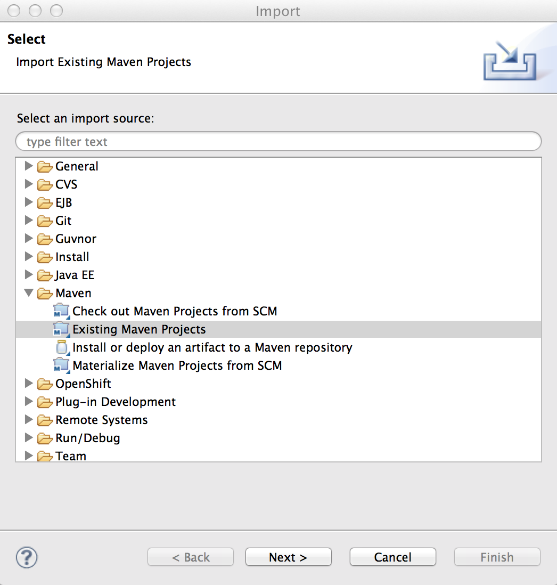
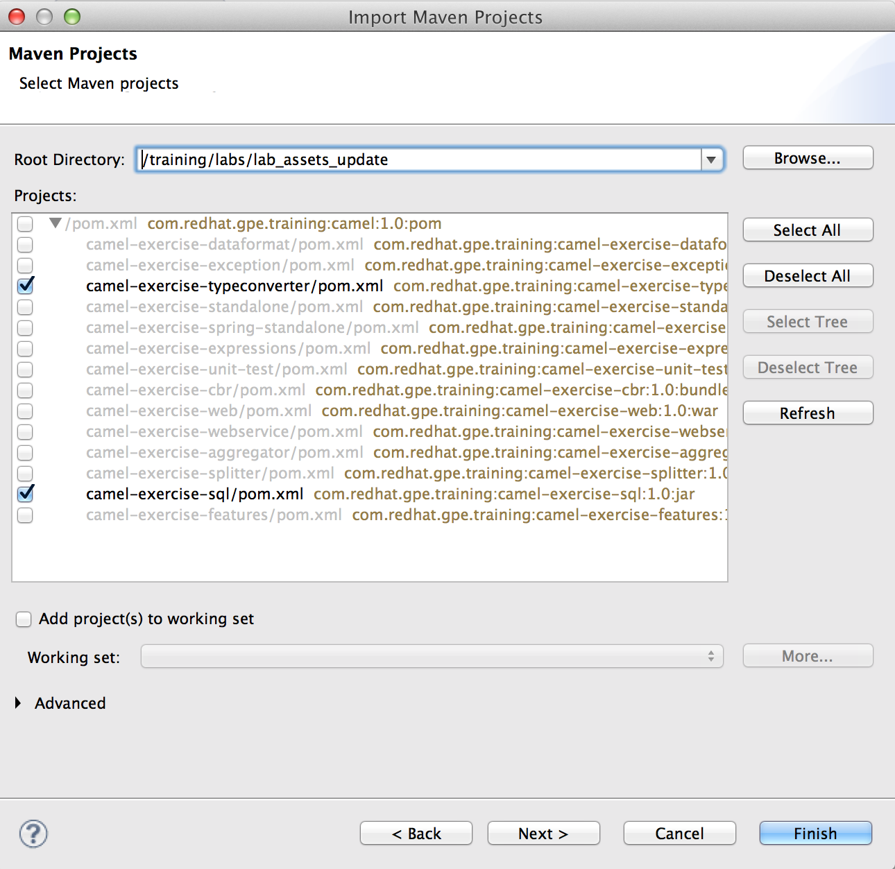
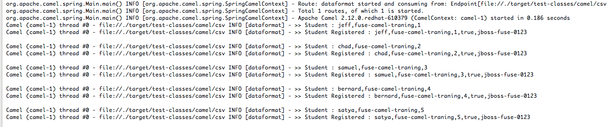
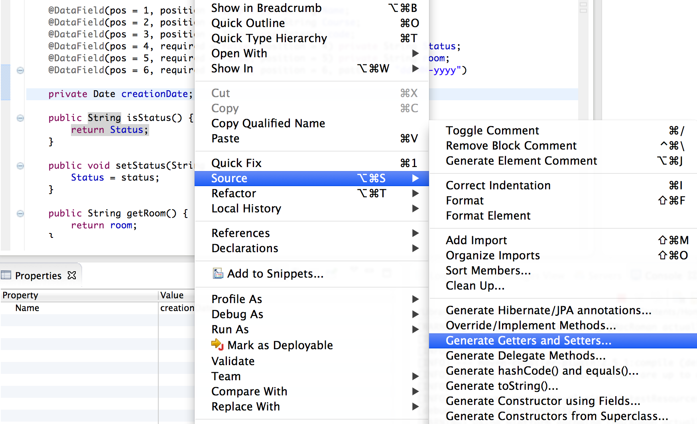
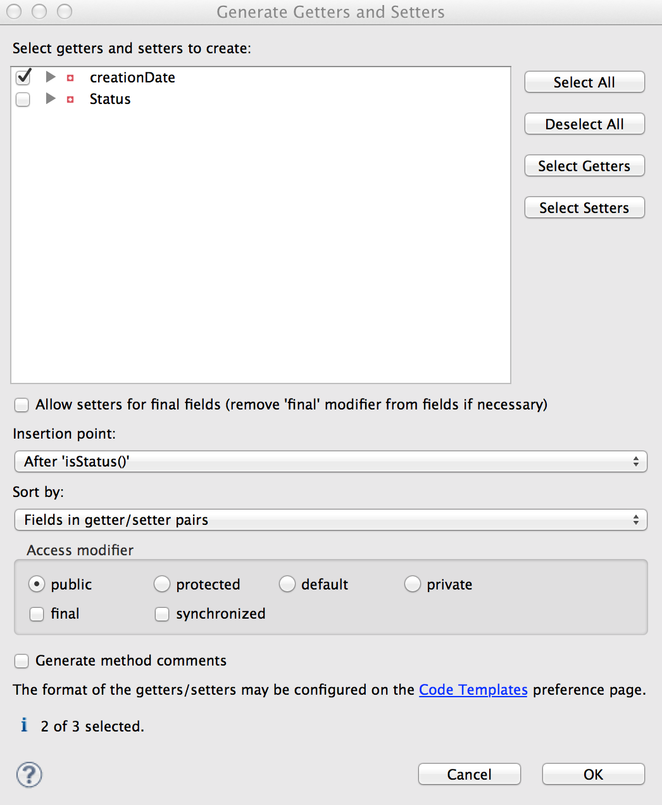
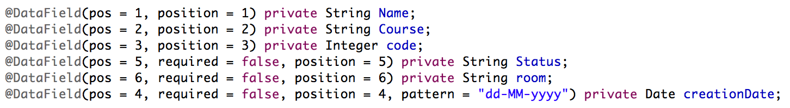
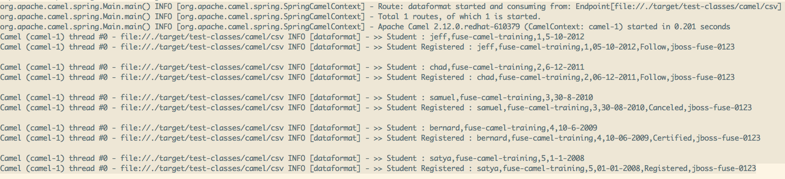
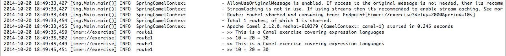

Lab 3 : Core Features
-
Extend your skills based on what has been learned with module Core engine (DSL, CamelContext, Route, Message)
-
The students should be able to play with different object types within a Route and convert them like also the DataFormat (Bindy, …)
-
Have a more in depth knowledge about Exceptions (local, global)
TypeConverter
The main goal of this exercise is to demonstrate how Apache Camel works with the TypeConverter strategy and how you could add a new converter to be able to convert a Vector class into an ArrayList class. Such TypeConverter does not exist by default.
-
Launch JBoss Developer Studio (JBDS).
-
Select
File → Importfrom the menu. -
Expand folder
Maven -> Existing Maven Projects. ClickNext. -
Click
Browse.... Choose the directory~/lab_assets_updatecontaining a pom.xml (Maven project) file. -
Ensure the project
camel-exercise-typeconverteris selected (checkboxed), then clickFinish. -
Expand the project
camel-exercise-typeconverter -
Review the code assets (including the pom.xml file)
-
Specifically the
MyRouteBuilder.classcontaining 2 Routes exposed using thedirectcomponent.
The route direct://typeconverter will be used to consume an Exchange containing an ArrayList of Strings: "Charles", "Chad, "Jeff". But when the type converter processor trys to convert the Body of the Exchange Object from an ArrayList (which is a List of Strings) to a Vector, the error org.apache.camel.InvalidPayloadException : No body available of type: java.util.Vector but has value: [Charles, Chad, Jeff] of type: com.redhat.gpe.training.camel.bean.MyArray will be thrown.
This is because no conversion strategy exists for the MyArray type and as a result the exception is caught and the route direct://continue is called.
This second route direct://continue utilizes the type conversion feature in Apache Camel, through this code snippet:
context.getTypeConverterRegistry().addTypeConverter(Vector.class, MyArray.class, new ArrayConverter())
The code converts the Exchange body (which is the ArrayList) into a Vector and the information within the ArrayList will be displayed in the console log.
Now, run the project in JBDS.
-
In the
Project Explorerview, expand thesrc/main/resources/META-INF/springdirectory of thecamel-exercise-typeconverterproject -
Select
Run As → Camel Local Contextafter right-clicking on the filespring-camel-context.xml
The CamelContext is instantiated by Spring, the Routes registered and started and a Camel Exchange created and send to the direct:typeconverter endpoint as we have also
defined a bean called MessageProducer including a ProducerTemplate able to call our endpoint.
Review the code in this example and
-
In MyRouteBuilder.java, change the code for
from("direct:typeconverter")to the following:from("direct:typeconverter") // We will use a Type where there is no typeConverter strategy// From MyArray to Collection
.convertBodyTo(Collection.class) .log("We will convert the Object to a Collection");
-
Run the project using
Run as → Camel Local Context -
Check the console
-
Stop the CamelContext
-
Close the project
DataFormat
Now that we have experimented with the TypeConverter feature, we will have a look to a more complex transformation process which is based on the DataFormat feature. The goal of this exercise is to use the Bindy DataFormat which is able to map Java Objects with CSV records and marshall/unmarshall the body content of an Apache Camel Exchange.
-
Expand the project
camel-exercise-dataformat -
Review the code assets, specifically the
Student.javafile containing Bindy Annotations (eg: @DataField(.....)) -
Launch the
CamelContextby right-clicking onsrc/test/resources/spring-camel-context.xml, and selectingRun As → Camel Local Context -
Check the log within the console

As you can see the file test/resources/camel/csv/students.txt has been consumed, the CSV records of the file split into individual Strings and each String is transformed into a HashMap<String, Object> by the Bindy Dataformat unmarshaller (where the String of the HashMap is the Model class name and the Object processed by the Bindy component).
Next the BeanProcessor MyBean is invoked, the content enriched and a Student object returned. The Student object will be transformed into a String during the marshalling process.
-
Add the following Date field (including Getter and Settter methods) to
src/main/java/....camel/model/Student.java.private Date creationDate; Right-click on the Java editor showing the source of Student.java, and select
Source -> Generate Getters and SettersCheck the checkbox next to creationDate, and click
OK-
In Student.java, make necessary changes to the Bindy annotations, such that they resemble the following:
Key change includes creating a Bindy annotation with the pattern ("dd-MM-yyyy")
-
In
src/test/resources/camel/csv/students.txt, append additional date and status fields to the end of every record. Use the values shown in this diagram: -
Launch the
CamelContextby right-clicking onsrc/test/resources/spring-camel-context.xml, and selectingRun As → Camel Local Context -
Check the log within the console
 -
Close the project
Expressions
The next exercise will demonstrate how you can use some of the different languages supported like constant, simple and ognl languages within an Apache Camel project. The three languages will be used to set the value of the Body, 2 headers identified with the value "value1" and "value2" and the result "addition".
The exercise involves a bean called "Calculation" which contains the fields "value1" and "value2" plus of course the method "addition" that we call
to get the result. simple and ognl languages offer the possibility to access the setter fields or methods of an object.
To proceed with the exercise, follow the steps described here after
-
Expand the project
camel-exercise-expressions -
Review the code and specifically the DSL
.setBody(), .setHeader()and the expression languages used -
To launch the project, select
Run as → Camel Local Context -
Every 10s, you will see that Apache Camel will log the result of the addition
>> 10 + 20 = 30 -
Close the project
Exceptions
This exercise shows how Exceptions and ErrorHandler can augment the management of messages within a Camel Route. It contains different Apache Camel Routes
which are used to generate different exception types and to show how they are intercepted by onException or managed by one of the Apache Camel ErrorHandler (DefaultErrorHandler or DeadLetterChannel).
The scenario works as such
* Different files will be consumed by the from("file") endpoint
* If the XML file contain a payment in EUR, then a MyFunctional Exception is raised, which is intercepted by the onException() interceptor, the exception is handled
and will not be redelivered. So the exception appears only one time in the log of the console.
* If the file contains a payment in US Dollar an Exception is raised (and not anymore a MyFunctional exception) which is not intercepted by onException and so the DeadLetterChannel
will try to redeliver 2 times the last camel processor where the error took place before to send the result to a camel route logging the info.
-
Expand the project
camel-exercise-exception -
Review the code
-
To launch the project, select
Run as → Camel Local Context
Remarks : * The MyBean pojo is used to generate the different Exception types (MyFunctional or a simple Exception) and to increase an internal counter needed to measure how much the DLD Channel has called the redelivery option. * The log output generated within the console of JBDS represents all the steps described within the scenario
org.apache.camel.spring.Main.main() INFO [org.apache.camel.spring.SpringCamelContext] - Route: cbr started and consuming from: Endpoint[file://./target/test-classes/camel/in/xml]
org.apache.camel.spring.Main.main() INFO [org.apache.camel.spring.SpringCamelContext] - Route: direct-error-handler-with-exception started and consuming from: Endpoint[direct://errorHandlerWithException]
org.apache.camel.spring.Main.main() INFO [org.apache.camel.spring.SpringCamelContext] - Route: direct-error-handler started and consuming from: Endpoint[direct://errorHandler]
org.apache.camel.spring.Main.main() INFO [org.apache.camel.spring.SpringCamelContext] - Route: DLQ started and consuming from: Endpoint[direct://directDLQError]
org.apache.camel.spring.Main.main() INFO [org.apache.camel.spring.SpringCamelContext] - Total 4 routes, of which 4 is started.
org.apache.camel.spring.Main.main() INFO [org.apache.camel.spring.SpringCamelContext] - Apache Camel 2.12.0.redhat-610379 (CamelContext: camel-1) started in 0.236 seconds
Camel (camel-1) thread #0 - file://./target/test-classes/camel/in/xml INFO [cbr] - Message to be handled: EUPayments.xml, body: <?xml version="1.0" encoding="UTF-8"?>
<tns:Payments xmlns:tns="http://www.fusesource.com/training/payment"
xmlns:xsi="http://www.w3.org/2001/XMLSchema-instance"
xsi:schemaLocation="http://www.fusesource.com/training/payment xsd/Payment.xsd ">
<tns:Currency>EUR</tns:Currency>
<tns:Payment>
<tns:from>ade</tns:from>
<tns:to>jack</tns:to>
<tns:amount>1000000.0</tns:amount>
</tns:Payment>
<tns:Payment>
<tns:from>jack</tns:from>
<tns:to>jill</tns:to>
<tns:amount>20.0</tns:amount>
</tns:Payment>
<tns:Payment>
<tns:from>ade</tns:from>
<tns:to>jill</tns:to>
<tns:amount>42.0</tns:amount>
</tns:Payment>
</tns:Payments>
Camel (camel-1) thread #0 - file://./target/test-classes/camel/in/xml INFO [org.apache.camel.builder.xml.XPathBuilder] - Created default XPathFactory com.sun.org.apache.xpath.internal.jaxp.XPathFactoryImpl@66ffaea7
Camel (camel-1) thread #0 - file://./target/test-classes/camel/in/xml INFO [cbr] - This is an Euro XML Payment: EUPayments.xml
Camel (camel-1) thread #0 - file://./target/test-classes/camel/in/xml INFO [direct-error-handler-with-exception] - Message will be processed only 1 time.
Camel (camel-1) thread #0 - file://./target/test-classes/camel/in/xml INFO [com.redhat.gpe.training.camel.MyBean] - >>>> Exception created for : EUR, counter = 1
Camel (camel-1) thread #0 - file://./target/test-classes/camel/in/xml INFO [direct-error-handler-with-exception] - %%% MyFunctional Exception handled.
Camel (camel-1) thread #0 - file://./target/test-classes/camel/in/xml INFO [cbr] - Message to be handled: USPayments.xml, body: <?xml version="1.0" encoding="UTF-8"?>
<tns:Payments xmlns:tns="http://www.fusesource.com/training/payment"
xmlns:xsi="http://www.w3.org/2001/XMLSchema-instance"
xsi:schemaLocation="http://www.fusesource.com/training/payment ../xsd/Payment.xsd ">
<tns:Currency>USD</tns:Currency>
<tns:Payment>
<tns:from>paul</tns:from>
<tns:to>ade</tns:to>
<tns:amount>1000000.0</tns:amount>
</tns:Payment>
<tns:Payment>
<tns:from>daan</tns:from>
<tns:to>jack</tns:to>
<tns:amount>78.0</tns:amount>
</tns:Payment>
<tns:Payment>
<tns:from>pat</tns:from>
<tns:to>jill</tns:to>
<tns:amount>13.0</tns:amount>
</tns:Payment>
</tns:Payments>
Camel (camel-1) thread #0 - file://./target/test-classes/camel/in/xml INFO [cbr] - This is an USD XML Payment: USPayments.xml
Camel (camel-1) thread #0 - file://./target/test-classes/camel/in/xml INFO [direct-error-handler] - Message will be processed 2 times.
Camel (camel-1) thread #0 - file://./target/test-classes/camel/in/xml INFO [com.redhat.gpe.training.camel.MyBean] - >>>> Exception created for : USD, counter = 1
Camel (camel-1) thread #0 - file://./target/test-classes/camel/in/xml INFO [com.redhat.gpe.training.camel.MyBean] - >>>> Exception created for : USD, counter = 2
Camel (camel-1) thread #0 - file://./target/test-classes/camel/in/xml INFO [com.redhat.gpe.training.camel.MyBean] - >>>> Exception created for : USD, counter = 3
Camel (camel-1) thread #0 - file://./target/test-classes/camel/in/xml INFO [DLQ] - >>> Info send to DLQFollow theses steps:
-
Review the code of the project
camel-exercise-exceptionand specifically the ErrorHandlers (eg: DLQ, direct-error-handler-with-exception and direct-error-handler) and how we generate exceptions within MyBean -
In the project
camel-exercise-exception, expand thesrc/main/resources/META-INF/springdirectory using theProject Explorer -
Select
Run As -→ Camel Local Contextby right-clicking on the filespring-camel-context.xml -
When the 2 files have been consumed, review the information logged in the console
-
Stop the CamelContext.
You have now completed the lab.